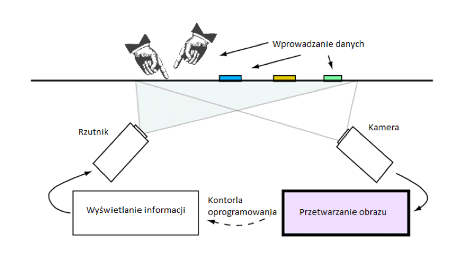

Cel:
Stworzenie urządzenia umożliwiającego kontrole wielu urządzeniom jednocześnie, za pomocą przejrzystego, czytelnego i dynamicznego interfejsu użytkownika.
Zasada działania:

Na szklanym, zmatowionym blacie stołu za pomocą umieszczonego pod nim rzutnika wyświetlane są informacje i wizualizacje. Wprowadzanie danych odbywa się przy pomocy „klocków” z nadrukowanymi od spodu specjalnymi kształtami. Kamera zczytuje obraz, a oprogramowanie „rozpoznaje” kształty i określa ich współrzędne, przyspieszenie, prędkość i kąt obrotu. Możliwe jest również wprowadzanie danych poprzez dotknięcie powierzchni stołu palcem.
Umożliwia to kontrolowanie wielu parametrów jednocześnie, oraz eliminuje konieczność używania zawodnych elementów mechanicznych (potencjometry, przełączniki itp.).
Zastosowania takiego kontrolera są nieograniczone. Można go wykorzystać do sterowania robotami, maszynami, pojazdami, jak i również tworzenia efektownych i dynamicznych prezentacji.
Największą zaletą tego urządzenia jest multimedialność i brak ograniczeń, co do rodzaju urządzeń, z którymi będzie ono powiązane. Ogromnym ułatwieniem jest też możliwość wprowadzenia czytelnego, w pełni dynamicznego interfejsu użytkownika, co w dużym stopniu usprawnia i ułatwia pracę.
Oprogramowanie bazuje na darmowej, otwartej bibliotece reacTIVision wykorzystującej protokół TUIO, dzięki któremu możliwa jest komunikacja z dowolnym oprogramowaniem zewnętrznym.
Do skonstruowania takiego kontrolera potrzebne będzie kilka urządzeń:
- Kamera przemysłowa stosunkowo wysokiej jakości
- Projektor
Założeniem projektu jest uzyskanie obrazu o dużej przekątnej ze stosunkowo niewielkiej odległość (liczy się wygodna wysokość stołu). Stąd też najlepszym rozwiązaniem jest rzutnik typu ST (short throw). Np. BENQ MP772 ST. Rzutnik ten umożliwia uzyskanie obrazu o przekątnej ok. 49” z odległości 62 cm.
Istnieje oczywiście możliwość wykorzystania innych rzutników, lecz wtedy konieczne byłoby zbudowanie wysokiego stołu, co utrudniałoby jego obsługę. Jedyną rozsądną alternatywą dla rzutnika MP772 ST jest model MP522 ST umożliwiający uzyskanie obrazu o takiej samej przekątnej z odległości o 27 cm większej niż w przypadku MP772 ST.
- Materiały do zbudowania ramy stołu
- Komputer PC